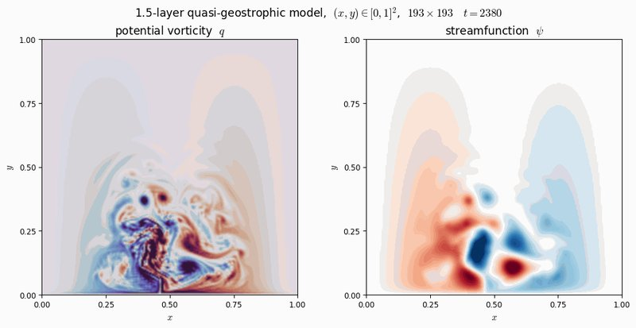

The 1.5-layer quasi-geostrophic model is the classic testbed for mesoscale ocean variability, Rossby waves, the inverse energy cascade and ensemble data assimilation. QG-Python is a faithful port of the QG-C model of Sakov (2024) in which the legacy Fortran multi-grid Helmholtz solver is replaced by a direct sparse LU factorization (SuperLU through SciPy). The streamfunction inversion is then exact to machine precision and deterministic, so the only numerical error left is the one introduced by the time integrator, which is exactly what the package is built to measure.
Three integrators are exposed under a single API: the classical fourth-order Runge-Kutta scheme, the Leapfrog scheme with the Robert-Asselin (RA) filter, and the Leapfrog scheme with the Robert-Asselin-Williams (RAW) filter. Diagnostic modules compute the linearized operator, its leading eigenspectrum and the maximum Lyapunov exponent. The default configuration is the 97 × 97 grid of QG-C (mrefin = 6, 9,025 interior degrees of freedom), unchanged, so results are comparable with the body of prior work that uses QG-C as a dynamical core.
A small package on top of NumPy and SciPy. Configuration (resolution, physical parameters, integrator, time step, horizon, output cadence) lives in a YAML file.
| Call | What it gives you |
|---|---|
QGModel(config) | build a model from a YAML configuration file; assembles and factorizes the Helmholtz operator once |
model.rhs(q) | the right-hand side F(q) of the potential vorticity equation, as an array shaped like q |
model.step_rk4(q, dt) | one fourth-order Runge-Kutta step |
model.step_lf_ra(q_prev, q, dt, alpha) | one Leapfrog step with the Robert-Asselin filter of strength alpha |
model.step_lf_raw(q_prev, q, dt, alpha, beta) | one Leapfrog step with the Robert-Asselin-Williams filter |
model.linearize(q_eq, eps) | sparse approximation of the Jacobian of F at q_eq by centred finite differences |
model.eigvals(q_eq, k=200) | the k leading eigenvalues of the Jacobian via ARPACK |
model.lyapunov_benettin(q_eq, T, n_renorm) | the maximum Lyapunov exponent by the Benettin algorithm, with its convergence trace |
from qg_python import QGModel
model = QGModel("config/mrefin6.yaml") # 97 x 97, factorizes the Helmholtz operator
q = model.restart("data/q_eq_mrefin6.npz") # equilibrium state, t = 1e5
for _ in range(1000):
q = model.step_rk4(q, dt=1.0)
J = model.linearize(q, eps=1e-6) # sparse Jacobian at the equilibrium
lam = model.eigvals(q, k=200) # leading eigenvalues (ARPACK)
sigma1, trace = model.lyapunov_benettin(q, T=2000, n_renorm=200)git clone https://github.com/enino84/qg-leapfrog-stability
cd qg-leapfrog-stability
pip install -r requirements.txtThe Zenodo archive is the authoritative citation target: it holds the source code and the simulation outputs (equilibrium restart fields at both resolutions, eigenvalue clouds, the Benettin trace and the time-resolved diagnostics of every run). The GitHub mirror tracks the source, the shell drivers and the plain-text summaries.
One command regenerates every experiment: the spin-up from rest, the RK4 reference run, the LF + RA and LF + RAW runs, the α sensitivity sweep over {0.05, 0.10, 0.20, 0.40}, the eigenspectra at both resolutions, the Lyapunov estimate and all the figures. About 4 to 5 hours on one laptop core, no GPU, bitwise reproducible given the same NumPy, SciPy and ARPACK versions. Each step can also be run on its own.
bash run_all.shIf you use QG-Python or the dataset, please cite the Data Services Article and the Zenodo record.
Nino-Ruiz, E. D. (2026). QG-Python: A reproducible 1.5-layer quasi-geostrophic modelling service with direct sparse solvers, spectral stability diagnostics and filter sensitivity data. Geoscience Data Journal, 13, e70107. doi:10.1002/gdj3.70107
Nino-Ruiz, E. D. (2026). QG-Python: a reproducible 1.5-layer quasi-geostrophic modelling service with spectral stability and filter sensitivity diagnostics (Version 1.0) [Software and dataset]. Zenodo. doi:10.5281/zenodo.22168803
@article{ninoruiz2026qgpython,
title = {QG-Python: A reproducible 1.5-layer quasi-geostrophic modelling service
with direct sparse solvers, spectral stability diagnostics and filter
sensitivity data},
author = {Nino-Ruiz, Elias D.},
journal = {Geoscience Data Journal},
volume = {13},
pages = {e70107},
year = {2026},
doi = {10.1002/gdj3.70107}
}